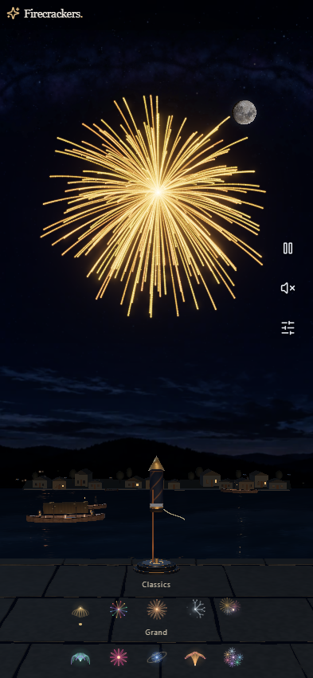
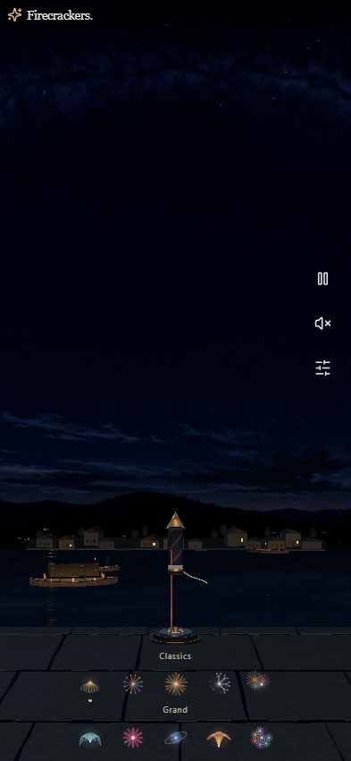
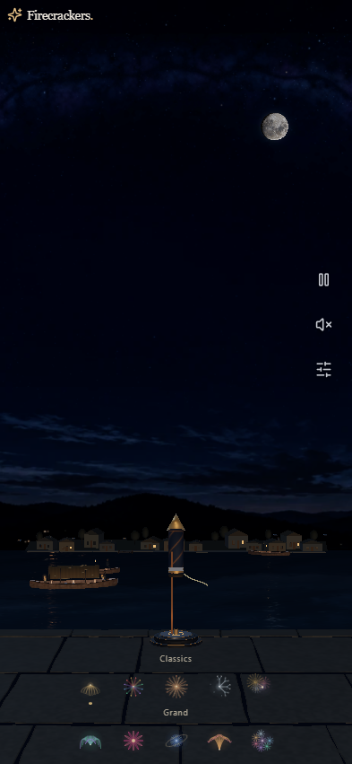
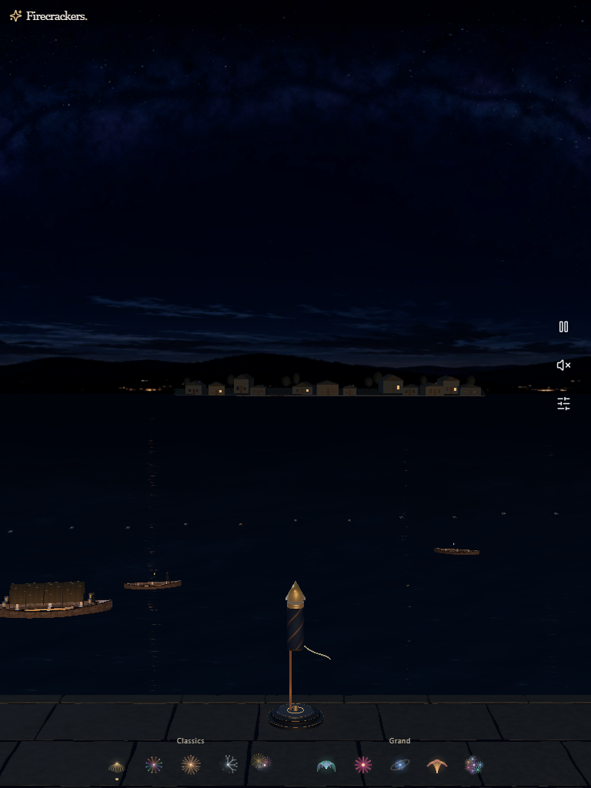
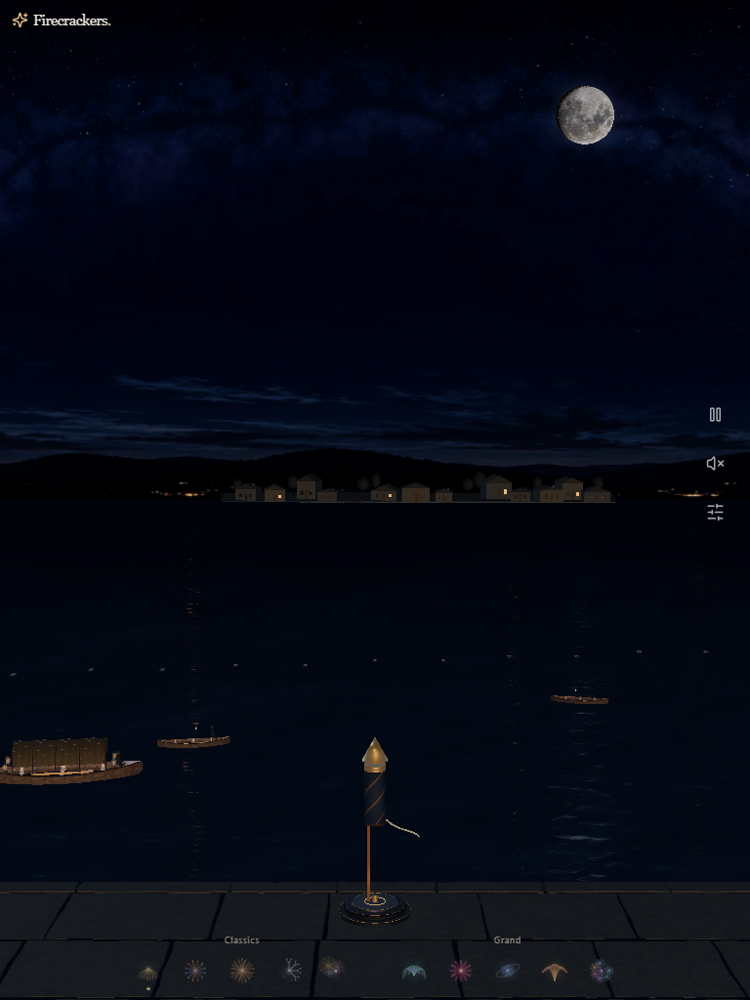
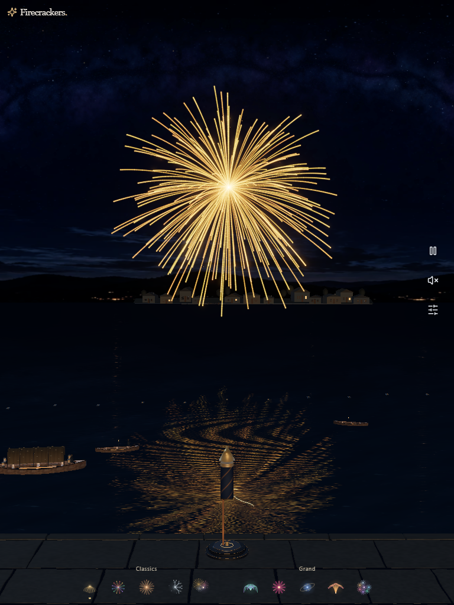
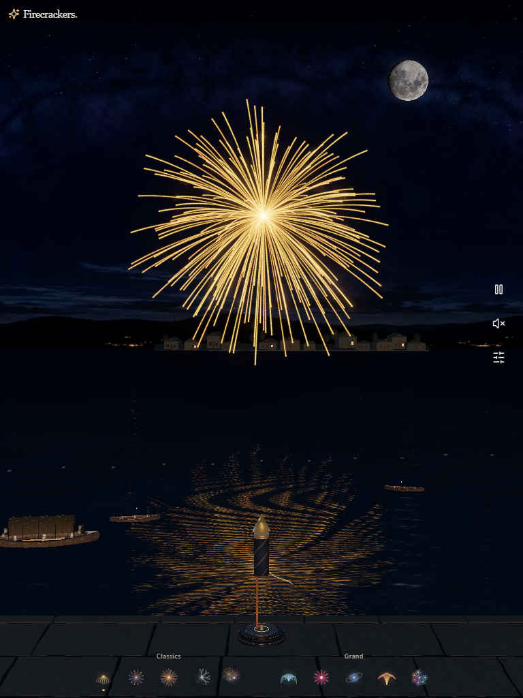
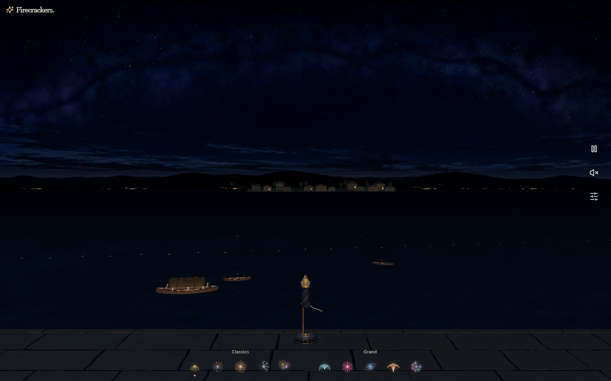
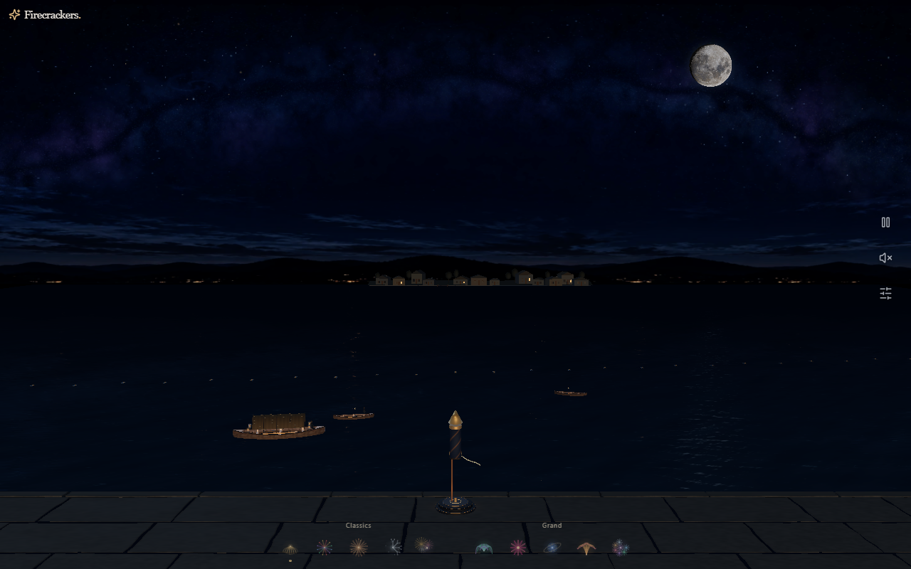
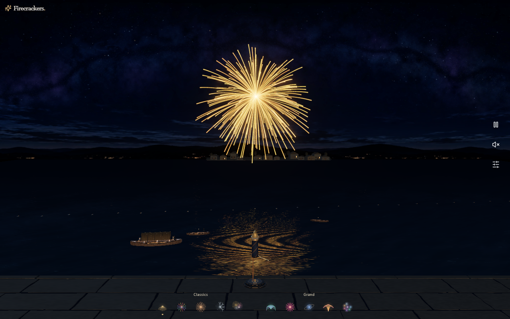

393 × 851 — willow


Actual installed Chrome hardware WebGPU captures. Phone/tablet viewports are emulation on a PC, not physical devices. Same seed 20260916, reset clock, viewport, Ultra and reduced flashes. Idle at time zero; Gold Willow at 4.9 seconds of logical simulation time. The source and full diagnostic snapshots are in before.json and after.json. Captures establish composition, not GPU completion or thermal performance.









